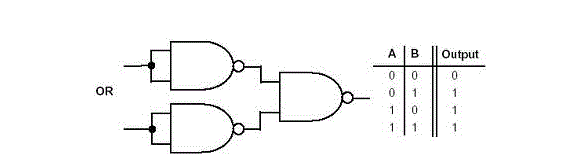
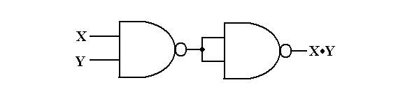
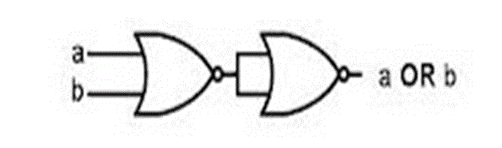

NAND gate as Universal Gate

Symbol of NAND Gate
The above diagram is of a two input NAND gate. The first part is an AND gate and second part is a dot after it represents a NOT gate. So it is clear that during the operation of NAND gate, the inputs are first going through AND gate and after that the output is reversed and we get the final output. Now we will look at the truth table of NAND gate.
We will consider the truth table of the above NAND gate i.e. a two input gate. The two inputs are A and B.
| A | B | OUT |
|---|---|---|
| 0 | 0 | 1 |
| 1 | 0 | 1 |
| 0 | 1 | 1 |
| 1 | 1 | 0 |
Now we will see how this gate can be used to make other gates.
Realization of NOT gate by NAND gate
This is the circuit diagram of a NAND gate used to make work like a NOT gate, the original logic gate diagram of NOT gate is given beside.

The above diagram is of an OR gate made from combinations of NAND gates, arranged in a proper manner. The truth table of an OR gate is also given beside the diagram. Now we will see the design of an AND gate from NAND gates.

The above diagram is of an AND gate made from NAND gate. So we can see that all the three basic gates can be made by only using NAND gates, that’s why this gate is called Universal Gate and it is appropriate.
NOR gate as universal gate
We have seen how NAND gate can be used to make all the three basic gates by using that alone. Now we will discuss the same in case of NOR gate.

The above diagram is of an OR gate made by only using NOR gates. The output of this gate is exactly similar to that of a single OR gate. As we can see the circuit arrangement of OR gate using NOR gates is similar to that of AND gate using NAND gates.

The above diagram as the name suggests is of AND gate using only NOR gate, again we can see that the circuit diagram of AND gate using only NOR gate is exactly similar to that of OR gate using only NAND gates. Now we will finally see how a NOT gate can be made by using only NOR gates.

The above diagram is of a NOT gate made by using a NOR gate. The circuit diagram is similar to that of NOT gate made by using only NAND gate.
So, from the above discussion it is clear that all the three basic gates (AND, OR, NOT) can be made by only using NOR gate. And thus it can be aptly termed as Universal Gate.
 by
by